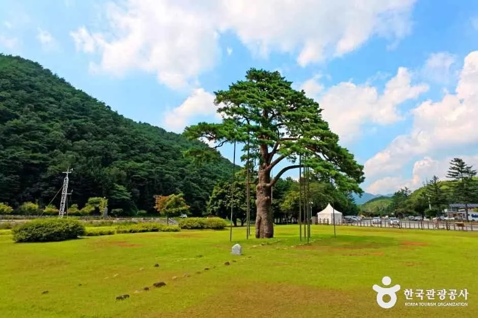
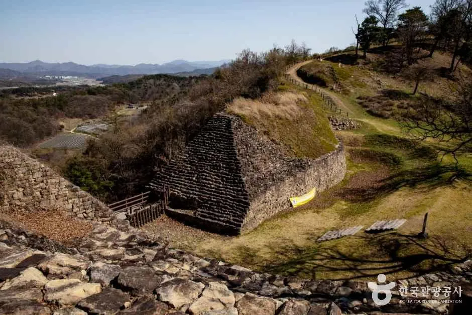
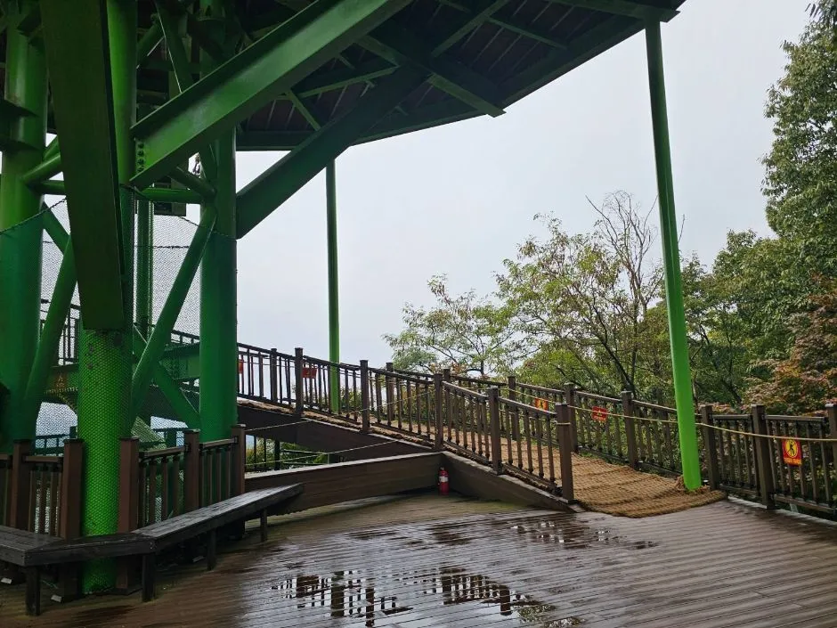
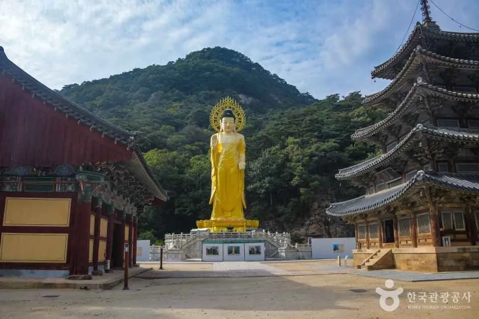
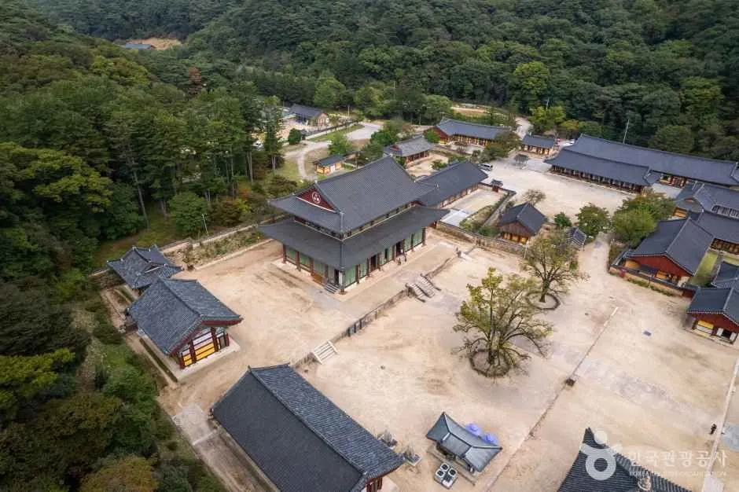
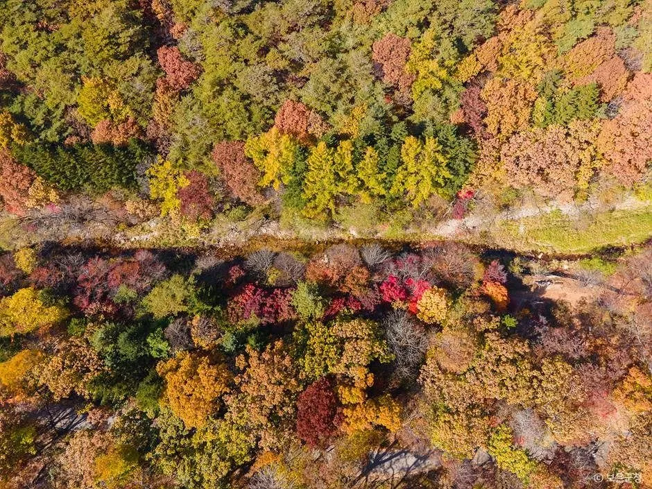
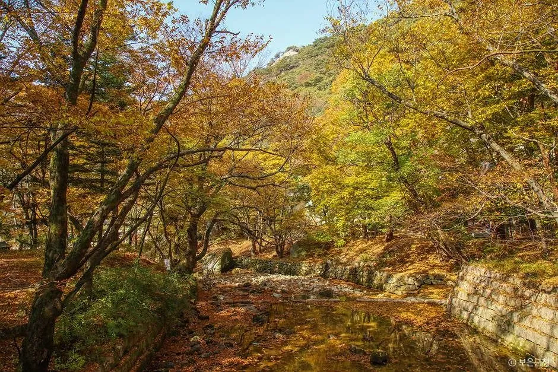
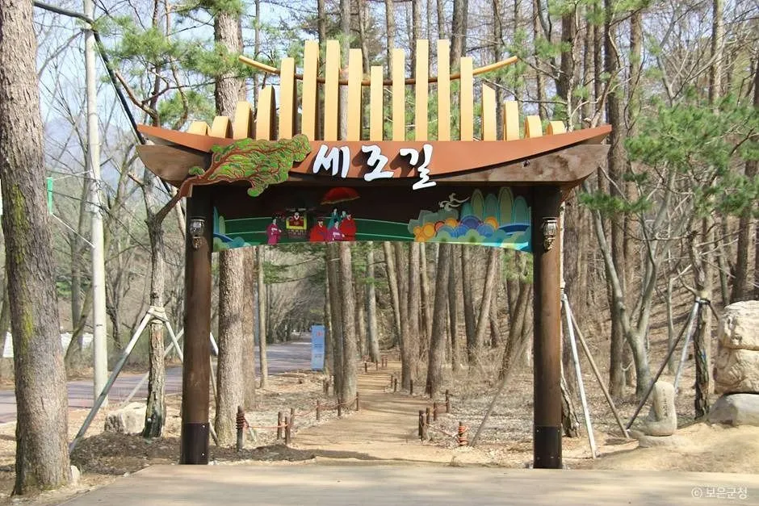
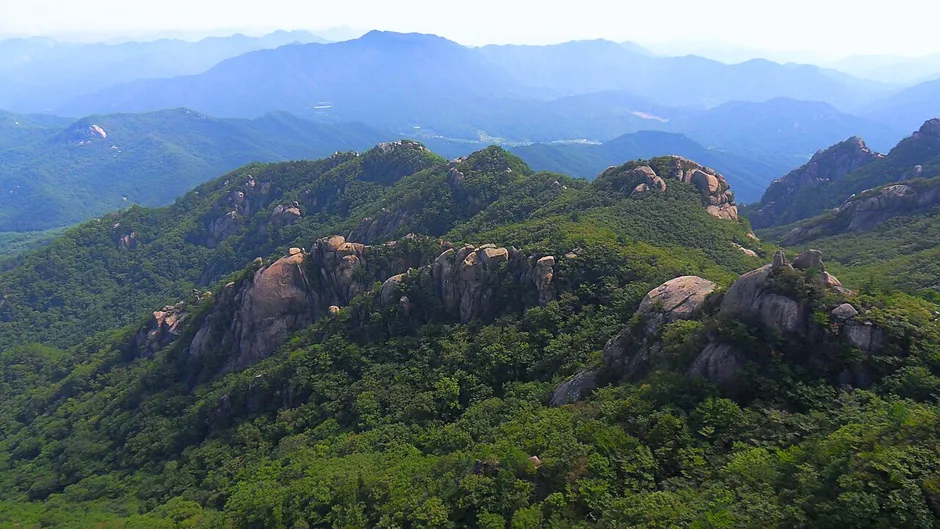
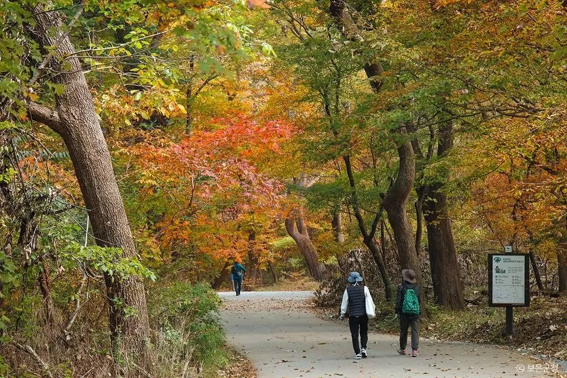

▲ 법주사 일주문으로 이어지는 진입로. 사진은 여름 녹음기에 촬영돼 단풍철 모습과 다르다(법주사 일대 절정은 10월 하순 이후로 안내됨) 사진=한국관광공사
충북 보은은 올해 10월 중순 두 가지가 겹친다. 20주년을 맞은 보은대추축제(10월 16~25일)와, 같은 시기 단풍이 산 위에서 아래로 내려오기 시작하는 속리산이다. 문제는 날짜다. 산림청 2026년 단풍절정 예측지도의 속리산 절정일은 10월 28일로, 축제가 끝난 3일 뒤다. 그래서 "축제 때 가면 단풍도 볼 수 있다"는 말은 반만 맞다. 이 글은 축제장과 속리산을 자차로 하루에 묶는 방법, 방문일별로 단풍을 얼마나 볼 수 있는지, 주차와 혼잡 시간대를 확인된 사실과 확인하지 못한 사실로 나눠 정리했다. 축제 공식 누리집(boeunjujube.com)은 접속이 차단돼 직접 열람하지 못했고, 일정은 개막 직전 지역·중앙 언론의 보은군 보도를 교차 확인했다. 10월 5일 기준으로 다시 찾아봤지만 주차장·셔틀·일자별 시간표를 밝힌 2026년 새 공지는 확인되지 않았다.
1. 한눈에 보기 — 일정과 장소부터

▲ 법주사 진입로 인근의 정이품송. 올해 축제 장소는 뱃들공원과 속리산 일원으로 보도됐다(사진은 녹음이 짙은 여름철 촬영). 사진=한국관광공사
축제 기간은 10월 16일(금)~25일(일) 열흘이다. 개막식은 16일 오후 6시 30분 뱃들공원 주무대, 폐막 행사는 25일 오후 7시 같은 무대다. 장소는 보은읍 뱃들공원과 속리산 일원으로 보도됐다. 주말은 17~18일과 24~25일 두 번이다.
| 구분 | 내용 | 확인 상태 |
|---|---|---|
| 기간 | 10월 16일(금)~25일(일), 10일간 | 다수 언론 일치 |
| 장소 | 보은읍 뱃들공원, 속리산 일원 | 다수 언론 일치 |
| 개막식 | 16일 18:30, 뱃들공원 주무대 | 언론 보도 |
| 폐막 행사 | 25일 19:00, 같은 무대 | 언론 보도 |
| 운영 시간 | 10:00~20:00 (프로그램 기준) | 여행 정보 사이트 요약 |
| 입장료 | 무료 | 여행 정보 사이트 요약, 체험 일부는 별도일 수 있음 |
| 연계 행사 | 전국민속소힘겨루기대회 16~20일, 보은누리 철판깔장 22~25일(화랑시장·보은전통시장 제2공영주차장) | 언론 보도 |
| 일정 변경 | 현지 상황에 따라 변경될 수 있음 | 축제 누리집 안내로 보도 |
ℹ️ 작년·재작년 날짜와 헷갈리지 말 것
검색하면 2025년(10월 17~26일, 당시 개막 직전 언론 보도 기준) 일정이 같이 나온다. 2026년은 10월 16~25일이다. 올해가 20주년이라 "추억의 사진전"(역대 1~19회 사진과 사연 전시), 한화이글스 유니폼 증정(17~18일, 24~25일 현장 체험 3개 이상 참여·SNS 인증 시 선착순) 같은 기념 이벤트가 붙어 있다.
2. 축제장에서 무엇을 하나 — 확인된 프로그램

▲ 보은읍에 있는 삼년산성. 축제장과 같은 읍내에서 짧게 들를 수 있는 유적이다. 사진=한국관광공사
프로그램은 크게 대추·농특산물 판매, 공연, 체험으로 나뉜다. 시간표 전체는 확인하지 못했고, 아래는 보도와 여행 정보에 나온 항목이다.
| 분류 | 확인된 내용 | 미확인 |
|---|---|---|
| 판매 | 대추와 지역 농특산물 판매, 신선 대추 판매 부스, 온라인 장터·콜센터 운영 | 현장 판매 가격, 판매 부스 위치 |
| 공연 | 개막 공연(16일 18:30), 폐막 공연(25일 19:00), 버스킹 | 일자별 출연자·시간표 |
| 체험 | 대추크루 기차놀이, 스탬프 투어, 어린이 놀이존, 수상레저체험존 | 체험별 요금·운영 시간 |
| 사전·기념 | 대추고추장·떡볶이 만들기(10월 11일까지 50팀 신청), 추억의 사진전, 보은아 사행시 짓기, SNS 인증 이벤트 | 축제 기간 중 접수 가능 여부 |
| 연계 | 보은 전국민속소힘겨루기대회(16~20일), 보은군민의 날 | 군민의 날 정확한 날짜 |
자차 방문객에게 중요한 것은 개막(16일 저녁)과 폐막(25일 저녁) 공연 시간대와 주말이 가장 붐빌 가능성이 크다는 점이다. 다만 시간대별 혼잡 정도나 주차 대책을 공식적으로 밝힌 자료는 찾지 못했다. 방문 전 축제 누리집이나 보은군 문화관광과에 임시 주차장과 셔틀 운행 여부를 확인하는 것이 안전하다.
3. 뱃들공원에서 속리산까지 — 자차 동선

▲ 보은 장안면의 말티재 전망대. 속리산 방향 고개 구간이라 날씨와 안개를 확인하고 지나는 편이 좋다. 사진=한국관광공사
축제장은 보은읍 뱃들로 일원(뱃들공원)이고, 속리산 법주사는 속리산면 법주사로 405다. 두 곳은 같은 보은군이지만 읍내에서 산 쪽으로 이동하는 거리다. 고속도로(당진~상주 구간)에서 내려오는 차는 보은IC에서 읍내를 거쳐 25번 국도로 속리산 방향에 진입하고, 누청삼거리에서 왼쪽 터널(새 길)과 오른쪽 말티재(해발 약 430m, 옛 길)로 갈린다는 안내가 있다(한국교육신문 보은 여행 가이드 기준, 게재일은 확인하지 못함). 읍내에서 속리산까지의 거리와 소요 시간을 밝힌 공식 자료는 찾지 못해 수치는 적지 않는다. 내비에서 출발 시각을 지정해 소요 시간을 직접 확인하는 방법을 권한다. 속리산IC나 상주영천고속도로 경유 경로는 확인된 자료가 없어 적지 않았다. 단풍철 주말 오후에는 속리산 진입로 정체가 길어질 수 있다.
| 구간 | 내용 | 확인 상태 |
|---|---|---|
| 내비 목적지(축제장) | 보은군 보은읍 뱃들로 일원, 내비 검색어는 '뱃들공원' | 주소 지명 확인, 공원 내 주차장 위치는 미확인 |
| 내비 목적지(속리산) | 충북 보은군 속리산면 법주사로 405(법주사), 법주사 앞 유료 주차장 | 한국관광공사 주소 |
| 고속도로 진입 | 보은IC 하차 → IC 교차로 좌회전(보은 방향) → 19번 국도 → 이평교사거리 우회전(속리산 방향) → 25번 국도 → 누청삼거리 | 한 여행 안내 기준(동학기념공원 주차장 안내 경로), 출발지별 소요 시간 확인하지 못함 |
| 두 곳 사이 | 누청삼거리에서 왼쪽 터널 새 길, 오른쪽 말티재(장안면) 옛 길로 갈림 | 거리·시간은 내비 확인 |
| 정이품송 | 법주사로 99, 법주사 방향 진입로 도중 | 한국관광공사 주소 |
정이품송(법주사로 99)은 법주사 진입 도로 바로 옆이라 이동 중 짧게 들르기 좋다. 속리산 쪽 상세 코스는 정이품송·세조길·법주사 가이드에 정리해 두었다.
4. 속리산 법주사 — 입장료·주차·걷는 거리

▲ 법주사 대웅보전. 문화재관람료는 2023년 5월부터 폐지돼 경내 입장은 무료다. 사진=한국관광공사
| 항목 | 내용 | 비고 |
|---|---|---|
| 법주사 입장료 | 무료 | 2023년 5월 문화재관람료 폐지(복수 자료) |
| 국립공원 입장료 | 무료 | 2023년 1월부터 전 국립공원 무료 |
| 법주사 앞 주차 | 중소형 1일 5,000원 안팎 | 기존 기사(정이품송·세조길·법주사 가이드) 기준, 공단 요금 안내는 확인하지 못함, 요금 변동 가능 |
| 무료 주차 후기 | 법주사 방향 직진 도중 도담펜션 건너편 무료 주차장 언급 | 후기 단일 출처, 현장 확인 필요 |
| 주차장→경내 | 상점가를 지나 약 15~20분 걷는 구간 | 블로그 가이드 기준 |
| 세조길 | 법주사~복천암 약 3.2km, 편도 약 70분, 무장애 구간 포함 | 기존 기사 참조 |
| 입산시간지정제(법주사→문장대) | 하절기(4~10월) 04:00~15:00, 동절기(11~3월) 05:00~14:00 (표기: 입산시간~통제시간) | 국립공원공단 입산시간지정제 공식 표 확인. 10월은 하절기, 11월 1일부터 동절기 |
| 입산시간지정제(법주사→천왕봉) | 하절기 04:00~14:00, 동절기 05:00~12:00. 법주사~문장대~천왕봉은 하절기 04:00~15:00, 동절기 05:00~13:00 | 국립공원공단 공식 표, 기상·산불 상황에 따라 별도 통제 가능 |
| 문의 | 속리산국립공원사무소(법주사로 84) 043-542-5267 | 국립공원공단 누리집 표기 |

▲ 금동미륵대불과 팔상전. 법주사는 유네스코 세계유산 '산사, 한국의 산지승원'에 포함돼 있다. 사진=한국관광공사
축제 때문에 주말에 속리산까지 가는 사람이 늘 수 있다는 점은 변수다. 주차 대수와 만차 시각은 공식 자료를 찾지 못했다. 속리산국립공원사무소는 9월 28일 '2026년 가을성수기 사전예고 집중단속'을 공고했는데, 이 글에서는 공고 제목만 확인했고 세부 단속 내용은 열람하지 못했다. 법주사 주차장이 차면 진입로 갓길에 세우고 싶어지지만, 단풍철 갓길 주차는 단속 기준이 겹치는 영역이다. 자세한 기준은 단풍철 갓길·국립공원 진입로 주차 단속을 먼저 확인하자.
5. 단풍은 언제 — 10월 28일은 폐막 3일 뒤

▲ 법주사 경내는 해발 300~600m 구간에 걸쳐 있어 산 위보다 단풍이 늦게 든다(사진은 녹색 계절 촬영, 단풍철 아님). 사진=한국관광공사
산림청과 국립수목원이 9월 22일 발표한 예측지도의 속리산 절정일은 10월 28일이다. 절정은 산 전체가 아니라 특정 시점의 기준이라, 그 전에도 고지대는 이미 물든다. 아래 고도별 표는 기존 기사에서 국립공원공단 속리산국립공원사무소 안내로 정리한 것을 다시 인용했다. 이번에 공단 누리집에서 원문과 연도를 확인하지 못했으므로 연도 불명의 일반 안내이며 2026년 실측이 아니다. 해마다 며칠씩 앞뒤로 움직이는 기준 정도로만 보자.
| 구간(해발) | 절정 시기 | 축제 기간과 겹침 |
|---|---|---|
| 문장대·천왕봉·능선(900~1,000m) | 10월 3~13일 | 축제 시작 전에 끝나는 구간 |
| 학소대·배석대·경업대(600~900m) | 10월 14~20일 | 축제 앞부분(16~20일)과 겹침 |
| 비로산장~세심정~법주사(300~600m) | 10월 21일~11월 2일 | 축제 후반(21~25일)에 시작 |
| 정이품송·사내리 일대(300m 이하) | 11월 3~11일 | 축제 이후 |

▲ 세조길 일대의 단풍철 풍경(촬영 연도 미상, 올해 모습 아님). 사진=한국관광공사
그러면 방문일별로 어떻게 정하면 좋을까. 산림청 예측은 전국 평균으로 최근 5년 절정 시기보다 약 0.8일 늦다는 것이고, 속리산만의 지연 폭은 아니다. 올해 기온에 따라 하루이틀 달라질 수 있다.
| 방문일 | 축제장 | 속리산 단풍 | 추천 |
|---|---|---|---|
| 16~18일(금~일) | 개막 주간, 개막식 16일 저녁 | 600~900m(학소대 일대) 절정 구간(14~20일), 900m 이상 상부는 이미 진 시기, 법주사(300~600m)는 이른 편 | 단풍 위주라면 중부 구간 탐방, 법주사는 이른 단풍 |
| 19~20일(월~화) | 평일, 소힘겨루기 16~20일 연계 | 600~900m 절정 막바지, 법주사 구간은 21일 시작 직전 | 한적하게 두 곳을 묶기 좋은 평일 |
| 21~23일(수~금) | 철판깔장 22일부터 | 300~600m(법주사·세조길) 절정 구간 시작(21일~), 예측 28일보다 앞선 초입 | 평일에 법주사 단풍과 축제를 함께, 색은 아직 덜 들었을 수 있음 |
| 24~25일(토~일) | 마지막 주말, 25일 19:00 폐막 | 300~600m 절정 구간 중반(산림청 28일 예측 직전) | 단풍은 더 가까우나 가장 붐빌 가능성 |
| 26~30일 | 축제 종료 | 산림청 예측 절정(28일) 전후, 300~600m 절정 구간 후반 | 단풍만 보려면 이쪽, 축제는 불가 |
| 11월 1일 이후 | 축제 종료 | 300m 이하(정이품송·사내리 일대)가 11월 3~11일 절정 구간(일반 안내) | 입산시간지정제가 11월 1일부터 동절기 기준으로 바뀜(법주사→문장대 05:00~14:00) |

▲ 세조길 구간의 가을 계곡 풍경. 단풍이 든 시기에 촬영된 사진이며 촬영 연도는 확인하지 못했다. 사진=한국관광공사
ℹ️ 산불조심기간·탐방로 통제도 확인
2025년 기준 가을철 산불조심기간은 10월 20일, 국립공원 탐방로 통제는 11월 15일이 기준이었다(속리산은 13개 구간 통제, 11개 구간 개방). 2026년 기간은 공고 전이므로 산불조심기간과 탐방로 통제 날짜 비교를 보고 방문 직전 공지를 확인하자.
전국 단풍 흐름은 단풍 절정 시기 계산법과 산림청 공식 예측지도에서 같이 볼 수 있다.
6. 하루 코스 3안 — 자차 기준

▲ 세조길 입구. 법주사에서 복천암까지 이어지는 완만한 숲길로 단풍철 산책 코스로 쓰기 좋다(사진은 낙엽이 진 시기 촬영, 단풍철과 다름). 사진=한국관광공사
| 코스 | 동선 | 적합한 날 | 주의 |
|---|---|---|---|
| A. 오전 속리산, 오후 축제장 | 08:00 법주사 도착 → 세조길 왕복(약 2시간) → 점심 → 보은읍 이동 → 15:00 뱃들공원 → 저녁 공연 | 21~23일 | 속리산 주차장은 오전 일찍 확보 |
| B. 오전 축제장, 오후 속리산 | 10:00 뱃들공원 → 점심 → 14:00 법주사·정이품송 | 16~20일 | 14시 도착이면 입산 통제(15:00) 직전이고 왕복 시간도 모자라 문장대 산행은 사실상 어려움 |
| C. 문장대 산행형 | 6~7시 법주사 출발 → 문장대(법주사 기점 편도 약 5.5km, 기존 기사 기준) → 하산 후 축제장 저녁 | 16~18일(상부 단풍은 이미 진 시기, 산행·전망 목적) | 법주사→문장대 04:00 입산 시작, 15:00 통제. 일몰과 읍내 이동 시간 고려 |
문장대 거리는 기점에 따라 수치가 갈린다. 기존 기사는 법주사에서 문장대 편도 약 5.5km, 법주사 원점회귀로 천왕봉까지 이으면 왕복 약 12km로 적었다. 반면 트립 매체 텔트립은 세심정에서 문장대까지 왕복 약 6.6km(3시간 30분)로 소개했는데, 이 6.6km는 편도가 아니라 세심정 기점 왕복 수치다(게재일은 확인하지 못함). 검색된 다른 등산 안내에는 법주사탐방지원센터에서 세심정까지 약 2.7km 포장길(약 1시간), 문장대·신선대·천왕봉을 도는 순환 코스가 약 17.5~17.7km·8시간으로 나온다(출처 매체 미확정). 기점과 코스 구성이 달라 수치가 다르므로 공단의 코스별 공식 수치는 확인하지 못했다고 보는 편이 정확하다. 축제를 같은 날 저녁에 묶으려면 산행은 하산 시각을 정해 두고 출발해야 한다.

▲ 문장대에서 본 속리산 능선. 2021년 8월 촬영이라 단풍철 모습과 다르다. 사진=Ashy Minivet / Wikimedia Commons, CC0

▲ 세조길 일대 단풍철 숲길. 오전 일찍 걸으면 비교적 한적하다(촬영 연도 미상). 사진=한국관광공사
✅ 자차 방문 요령
· 주말(17~18일, 24~25일)은 속리산 주차장에 오전 9시 전 도착하는 쪽이 안전하다(혼잡 시간은 공식 자료 없음, 추정)
· 개막(16일 저녁)과 폐막(25일 저녁) 공연 시간대는 축제장 주변 정체 가능성이 크다
· 평일 오후 코스 B가 가장 여유롭다
· 주차는 갓길보다 지정 주차장, 요금은 현장 안내 확인
· 말티재 구간은 비·안개 낀 날 서행(누청삼거리에서 터널 새 길도 선택 가능)
· 가을철 고속도로 혼잡 시간대는 가을 고속도로 교통량 시간대 분석을 참고
7. 먹거리와 대추 구매 — 확인된 것만
속리산 입구에는 산채비빔밥 거리(속리산면)가 있고, 산채와 버섯전골이 이 지역 대표 메뉴로 소개된다. 축제장 대추 판매가는 올해 자료를 찾지 못해 적지 않는다. 참고로 지난해(2025년) 보은 대추 생산량은 보도 기준 약 1,982t으로 전년보다 27% 늘어난 풍작이었다. 올해 작황은 확인하지 못했다.
| 항목 | 확인 상태 |
|---|---|
| 현장 대추 가격 | 확인하지 못함, 현장 비교 후 구매 |
| 온라인·콜센터 주문 | 축제에서 운영한다고 보도됨, 번호·주소 미확인 |
| 셔틀 운행 | 2026년 노선·시간은 확인하지 못함. 2025년에는 순환 3개 노선이 운행된 사례가 있음(아래 표) |
| 축제장 주차장 | 위치·수용·요금 확인하지 못함 |
참고로 지난해(2025년) 축제에서는 순환 셔틀이 운행됐다. 아래는 2025년 개인 블로그(순둥이)의 정리로, 2026년에도 같다는 보장이 없고 공식 확인도 하지 못했다.
| 노선 | 정차 구간 | 배차 간격 |
|---|---|---|
| 1번 | 대형버스주차장 → 주공아파트 | 평일 30분 / 주말 15분 |
| 2번 | 보은고 → 기아서비스센터 → 주공아파트 | 주말 전용, 15분 |
| 3번 | 제6주차장 순환 | 주말 전용, 15분 |
같은 블로그는 주말 혼잡이 커 주차 후 셔틀 이용을 권했다. 올해도 외곽 주차장에 세우고 셔틀로 이동하는 방식일 가능성이 있지만 추측이다. 문의는 보은군 안내 번호로 알려진 043-540-3392(블로그 표기)나 공식 누리집에서 확인하자. 가을철 단풍 드라이브 코스 전반은 가을 단풍 드라이브 코스 기사에서 볼 수 있다.
충북 다른 가을 코스를 이어 가려면 옥천 부소담악, 영동 월류봉 둘레길, 제천 월악산 영봉 기사가 있다.
8. 요약
2026 보은대추축제는 10월 16~25일, 보은읍 뱃들공원과 속리산 일원에서 열리며 입장은 무료로 보도됐다. 개막식은 16일 18:30, 폐막 행사는 25일 19:00이다. 속리산 절정 예측일은 10월 28일이라 폐막 후이고, 축제 기간에는 중고도(600~900m)가 16~20일, 법주사 일대는 21일 이후 단풍이 든다.
법주사 입장과 국립공원 입장은 무료, 법주사 앞 주차는 1일 5,000원 안팎(기존 기사 기준, 공단 요금 안내는 미확인)으로 알려졌다. 평일 오후에 축제장과 속리산을 묶는 코스가 가장 여유롭고, 주말 속리산은 일찍 도착하는 편이 낫다. 축제장 주차장·2026년 셔틀, 대추 가격, 일자별 프로그램 시간표, 두 곳 사이 정확한 소요 시간은 확인하지 못했으니 방문 전 공식 공지를 확인하자. 고도별 단풍 시기는 연도 불명 일반 안내이므로 2026년 실제 단풍은 산림청 예측(28일)과 현지 상황을 함께 보자.